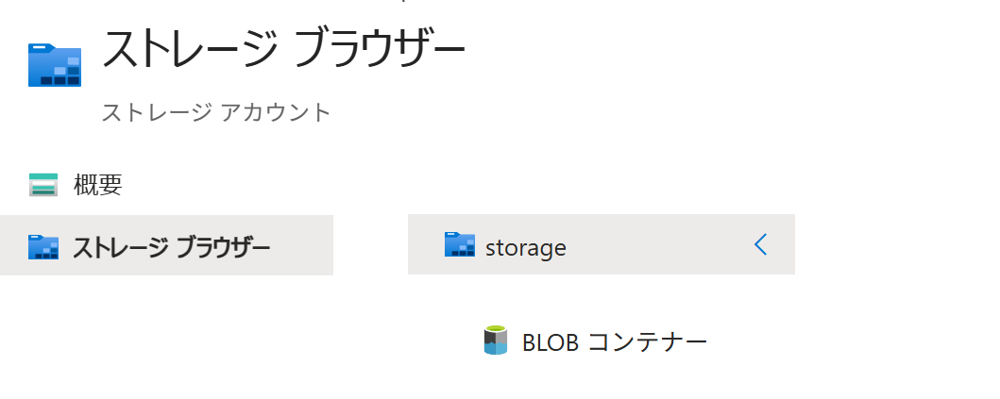

Azure ポータル で コンテナー（ADLS Gen2） を作成する
適用対象: ✔️ ストレージ アカウント
この演習では、Azure ポータル を使用して コンテナー（ADLS Gen2） を作成します。
所要時間: 約 10 分
先行の演習
この演習を始める前に ストレージ アカウント を作成する を完了してください。
ストレージ サービス
ストレージ サービス は、ストレージ アカウントで利用するデータ保存サービスの総称です。
Azure ポータルのメニューから 個々のストレージ サービスを利用できます。

| ポータルでの メニュー | サービス / 拡張機能 | 概要・主な特徴 | |
|---|---|---|---|
| [コンテナー] | Blob Storage | 画像やログなどを保存する汎用的なオブジェクト ストレージ（フラットな名前空間） | |
| Azure Data Lake Storage Gen2 (ADLS Gen2) | Blob Storage を基盤に、機能を拡張したデータレイク向けストレージ（階層型名前空間） | ||
タスク 1: コンテナー（ADLS Gen2）の作成
ADLS Gen2 が有効な ストレージ アカウント での コンテナー の作成は、ADLS Gen2 を利用する操作です。
- ポータルメニューから [ストレージ アカウント] を選択します。
storagev2msaz2を選択します。- サービスメニューから ストレージ ブラウザー ＞ [BLOB コンテナー] を選択します。

- [＋ コンテナーの追加] を選択します。
設定 値 名前 datalake匿名アクセスレベル [コンテナー (コンテナー と BLOB の匿名読み取りアクセス)] - [作成] を選択します。
- 完了を待ちます。
タスク 2: 作成されたリソースの確認
コンテナーが作成されていることを確認します。
- 上部の検索ボックスに
ストレージ アカウントと入力します。 - [ストレージ アカウント] を選択します。
storagev2msaz2を選択します。- サービスメニューから ストレージ ブラウザー ＞ [BLOB コンテナー] を選択します。
datalakeが存在することを確認します。- 匿名アクセス レベル が
コンテナーであることを確認します。